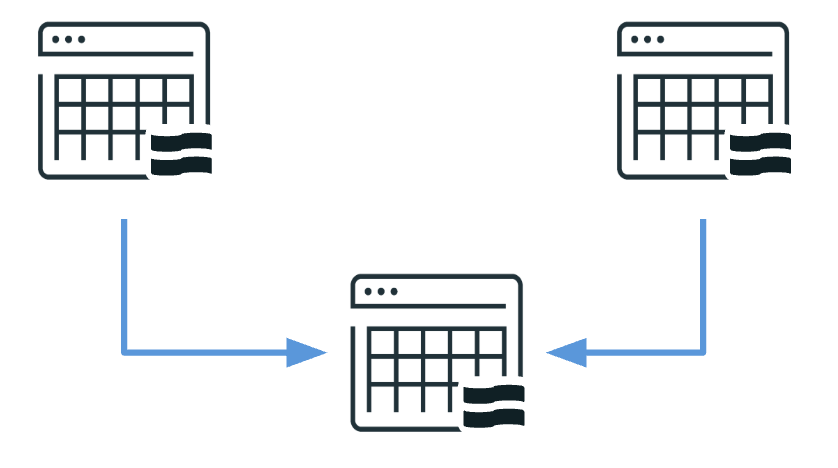

Section 3 · Data Transformation and Modelling · Quelle: Kurs 3, Kapitel 9–10
Reale Pipelines bestehen selten nur aus einer einzigen Datenquelle. Häufig müssen mehrere Streams miteinander verknüpft werden – etwa Bestelldaten mit dazugehörigen Statusänderungen. Dieses Dokument behandelt die in Lakeflow Declarative Pipelines unterstützten Join-Muster für Streaming-Daten sowie den Weg von einer Entwicklungspipeline zu einem überwachten, produktiven Deployment.
| Muster | Beschreibung | Beispiel |
|---|---|---|
| Stream-Snapshot-Join (Stream-Static-Join) | Eine Streaming Table wird mit einer statischen Referenztabelle verknüpft; nur die neuen Zeilen des Streams werden verarbeitet, dabei aber gegen den vollständigen aktuellen Stand der statischen Tabelle geprüft. | Länder-Codes einer Transaktionsstream mit einer statischen Länder-Nachschlagetabelle anreichern |
| Join zweier Streaming Tables über eine Materialized View | Beide Seiten ändern sich kontinuierlich; bei jedem Pipeline-Lauf werden alle Zeilen beider Tabellen erneut verknüpft, mit Optimierungen wo möglich. | Kundenaktivität mit Produktkatalog-Updates zusammenführen |
| Stream-Stream-Join | Inkrementeller Join zweier Streams, bei dem nur neu eintreffende Daten aus beiden Seiten verglichen werden; erfordert Windowing/Watermarking und liegt außerhalb des Kursumfangs. | Clickstream-Daten mit Echtzeit-Ad-Impressions zeitlich korrelieren |
Bei diesem Muster wird jede neu ankommende Zeile der Streaming Table gegen den kompletten Bestand der statischen Tabelle geprüft – das Ergebnis wird an die Ziel-Streaming-Table angehängt. Da nur eine Seite (der Stream) sich verändert, ist dieser Join effizient und zuverlässig: Die statische Tabelle muss nicht neu verarbeitet werden, nur die eingehenden Stream-Daten werden ausgewertet.
Sollen zwei sich kontinuierlich ändernde Streaming Tables verknüpft werden, reicht ein einfacher Stream-Snapshot-Join nicht mehr aus – hierfür kommt eine Materialized View zum Einsatz. Sie führt bei jedem Lauf einen vollständigen Inner Join über beide Quellen aus und nutzt dabei, wo möglich, inkrementelles Refresh, um unnötige Neuberechnung zu vermeiden:
-- Zwei Streaming Tables ueber eine Materialized View verknuepfen
CREATE OR REFRESH MATERIALIZED VIEW full_order_info_gold
COMMENT "Bestellungen verknuepft mit ihrem Status-Verlauf"
TBLPROPERTIES ("quality" = "gold")
AS
SELECT o.order_id,
o.order_timestamp,
s.order_status,
s.order_status_timestamp
FROM orders_silver o
INNER JOIN status_silver s
ON o.order_id = s.order_id;
-- Darauf aufbauende, gefilterte Gold-Sichten
CREATE OR REFRESH MATERIALIZED VIEW cancelled_orders_gold
AS
SELECT *, datediff(order_status_timestamp, order_timestamp) AS days_to_cancel
FROM full_order_info_gold
WHERE order_status = 'canceled';
Beachten Sie: Beim Referenzieren der beiden Streaming Tables (orders_silver, status_silver) innerhalb der Materialized-View-Definition entfällt das STREAM-Schlüsselwort – die View verarbeitet grundsätzlich den kompletten aktuellen Datenbestand beider Quellen.

Der Übergang einer Pipeline in den produktiven Betrieb umfasst vier zentrale operative Aufgaben:
COMMENT und TBLPROPERTIES für jeden Datensatz erleichtern das Verständnis in Unity Catalog, etwa "quality" = "bronze" zur Kennzeichnung der Medaillon-Schicht oder "pipelines.reset.allowed" = false, um versehentliche vollständige Refreshes und den damit verbundenen Verlust von Checkpoints zu verhindern.-- Grundstruktur des Pipeline-Event-Logs abfragen
SELECT id, event_type, details,
details:flow_progress,
details:user_action
FROM sdp_1_bronze.event_log_demo10;
Ein besonders nützlicher Anwendungsfall des Event-Logs ist die Analyse von Datenqualitäts-Metriken über mehrere Läufe hinweg: Die JSON-Struktur im Feld details lässt sich mit from_json und explode in tabellarische Form bringen, um pro Constraint bestandene und fehlgeschlagene Datensätze zu aggregieren.
databricks bundle-CLI lassen sich Pipelines validieren, deployen und ausführen. Beim Stream-Snapshot-Join gilt zudem: Werden Datensätze in der statischen Tabelle nachträglich geändert, nachdem der entsprechende Stream-Datensatz bereits verarbeitet wurde, wirken sich diese Änderungen erst nach einem vollständigen Refresh aus – nicht automatisch rückwirkend.